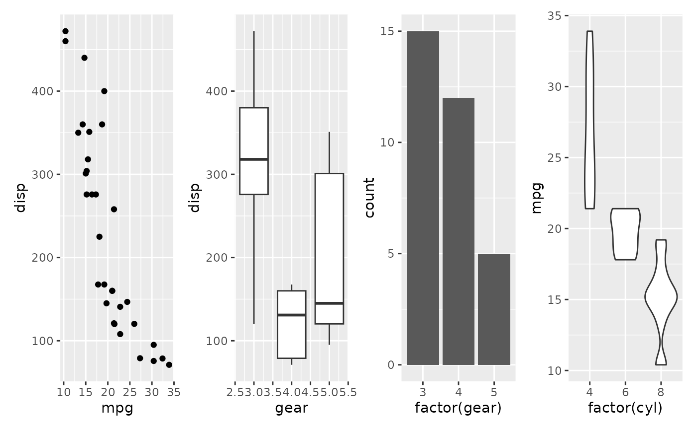
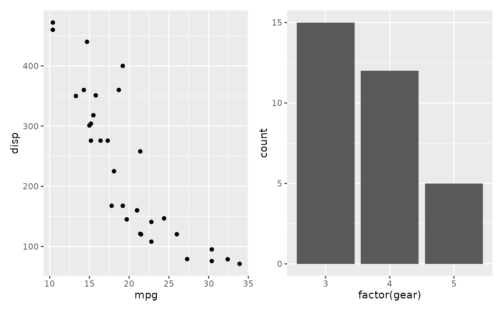
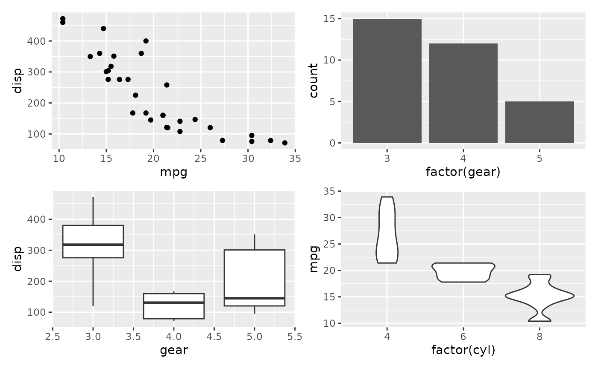
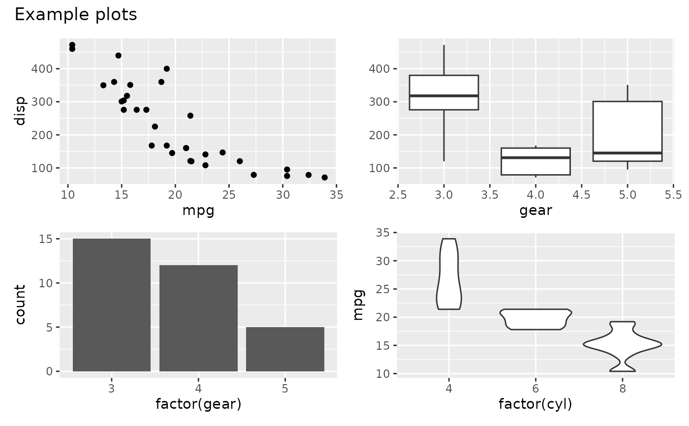
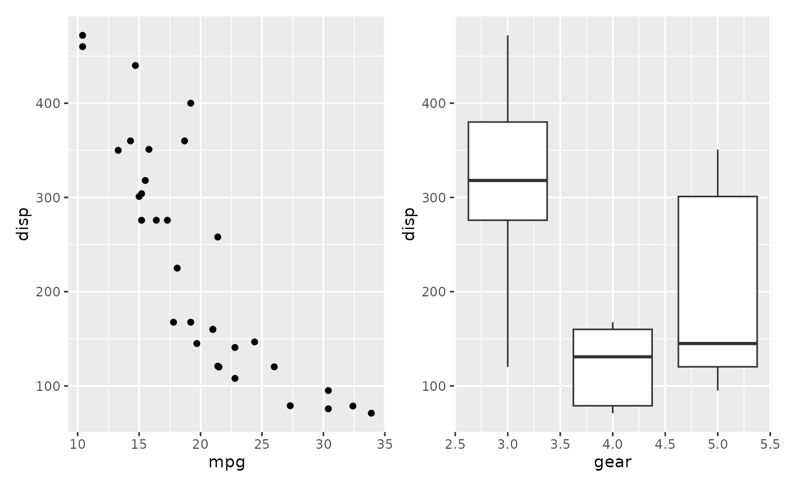
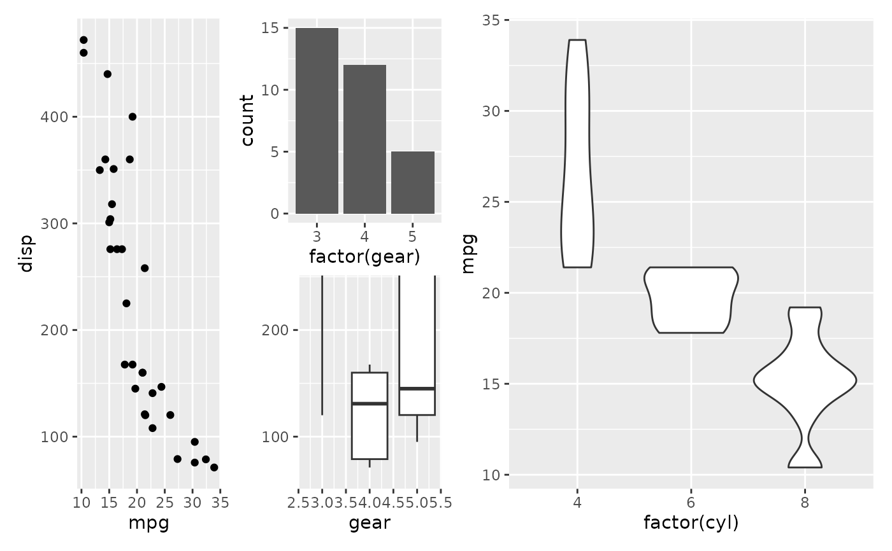
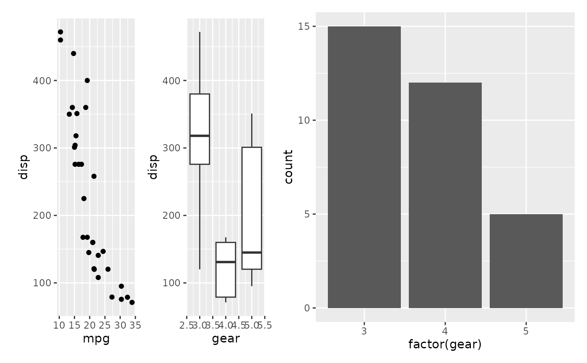

Recursively extract ordinary grid cells from nested patchwork objects and
arrange them in a new patchwork, optionally selecting or reordering cells.
flatten_patchwork() is the same function under its original name,
kept for existing code.
Usage
fmt_flatten(plots, ..., select_inds = NULL, nrow_inds_order = NULL)
flatten_patchwork(plots, ..., select_inds = NULL, nrow_inds_order = NULL)Arguments
- plots
A ggplot, patchwork object, grob, or nested list of these objects.
- ...
Named layout arguments passed to
patchwork::wrap_plots(), such asnrow,ncol,design,guidesandaxis_titles. Unknown, unnamed and duplicate arguments are rejected. Supply additional graphics inplotsas a list.- select_inds
Integer indices applied after flattening. Positive indices select and may repeat plots; negative indices exclude plots. Zero is ignored. Missing, fractional, mixed-sign and out-of-range indices are rejected. Duplicate cell names matched by a character
designare rejected; use an unnamed list to repeat cells by position in that design.- nrow_inds_order
Single positive integer, at most the number of selected plots, to reorder them by interleaving rows. Applied after selection; it does not set the output layout's
nrow. Withceiling(n / nrow_inds_order)output columns fornselected cells, plots take the positions thatbyrow = FALSEwithnrow = nrow_inds_orderwould give them; unlikebyrow, the cells themselves are reordered, so tags then run across rows instead of down columns.
Value
A patchwork object with ordinary grid cells at one level. Insets and
their main plot stay together and count as one cell for selection/reordering.
Containers marked with patchwork::free() also remain intact.
Details
Top-level plot annotations and the guides, axes,
axis_titles and tag_level settings are retained for patchwork
input. Explicit arguments in ... override inherited settings; an
explicit axes without axis_titles also drops the inherited
axis_titles, which then follows axes as in wrap_plots().
Grid geometry (dimensions, widths, heights and design) is rebuilt using
...; nested annotation and tagging scopes are not promoted.
Selection indices refer to the extracted cells, including spacers, guide
areas and wrapped graphics. A main plot with its insets, or a protected
free() container, occupies one selection index. Named list entries
that produce one cell retain their name; names inside nested lists are
retained without container-name prefixes. These cell names can be matched
to a character layout design by wrap_plots().
Tags from plot_annotation(tag_levels), including custom tag vectors,
are assigned in output order, so they follow select_inds and
nrow_inds_order rather than the original positions.
Insets are emitted alongside ordinary hosts at the same layout level,
allowing shared axes and axis titles to be collected. Composite inset hosts
remain intact. The returned object's length() and [[ follow
native patchwork child indexing and include inset objects; selection and
row interleaving use complete cells, including each host's insets.
Nested lists are unwrapped before binding each inset to its preceding host,
so list and patchwork inputs retain the same inset boundaries.
Flattening ordinary containers removes their nested collection scopes,
including inner guides = "keep" or guides = "collect" settings.
Collection is determined by the retained top-level settings and ....
Guide areas move to the same output level; when collecting guides,
patchwork uses only the first guide area if several are present. Use
patchwork::wrap_elements(full = group) to retain an entire group,
including its nested collection scopes, as one wrapped cell.
See also
Other plot formatting:
fmt_axis(),
fmt_axisText(),
fmt_axisTile(),
fmt_bg(),
fmt_boxplot(),
fmt_com(),
fmt_expand(),
fmt_his(),
fmt_legend(),
fmt_panel(),
fmt_plot(),
fmt_plot_base(),
fmt_point(),
fmt_raster(),
fmt_ref(),
fmt_scale(),
fmt_strip(),
fmt_strip2(),
fmt_tag(),
fmt_text()
Examples
library(ggplot2)
library(patchwork)
p1 <- ggplot(mtcars, aes(mpg, disp)) + geom_point()
p2 <- ggplot(mtcars, aes(gear, disp, group = gear)) + geom_boxplot()
p3 <- ggplot(mtcars, aes(factor(gear))) + geom_bar()
p4 <- ggplot(mtcars, aes(factor(cyl), mpg)) + geom_violin()
# \donttest{
# Flatten nested patchwork
nested <- (p1 | p2) / (p3 | p4)
fmt_flatten(nested, nrow = 1)

# Select specific sub-plots
fmt_flatten(nested, select_inds = c(1, 3))

# Interleave indices 1, 3, 2, 4, then arrange in two columns
fmt_flatten(nested, nrow_inds_order = 2, ncol = 2)

# Retain the overall title and collect matching axis titles
annotated <- nested + plot_annotation(title = "Example plots")
fmt_flatten(annotated, ncol = 2, axis_titles = "collect")

# Names determine placement in a character design
fmt_flatten(list(B = p2, A = p1), design = "AB")

# Keep a composite inset host together
inset_group <- wrap_plots(list(p1 | p2)) +
inset_element(p3, .5, .5, 1, 1, align_to = "full")
fmt_flatten(list(inset_group, p4), ncol = 2)

# Retain a nested guide scope inside a wrapped cell
kept_group <- (p1 | p2) + plot_layout(guides = "keep")
fmt_flatten(list(wrap_elements(full = kept_group), p3), guides = "collect")

# }